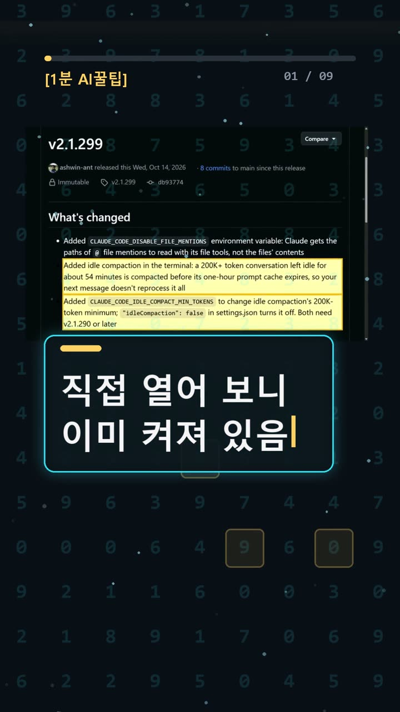
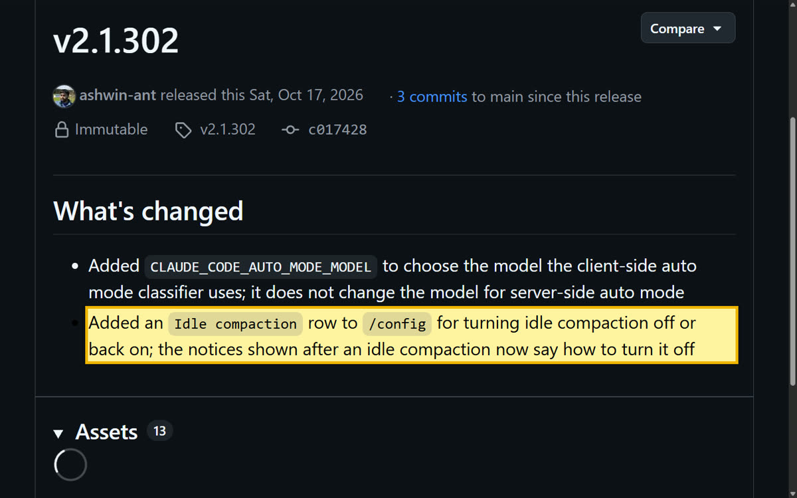
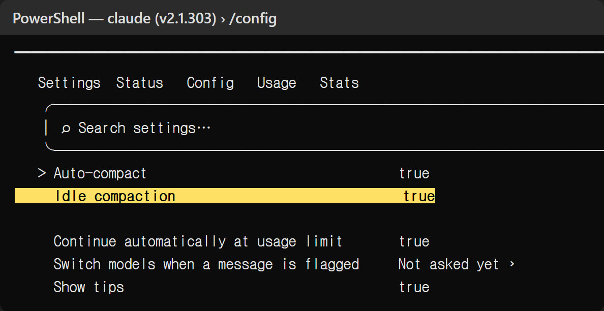
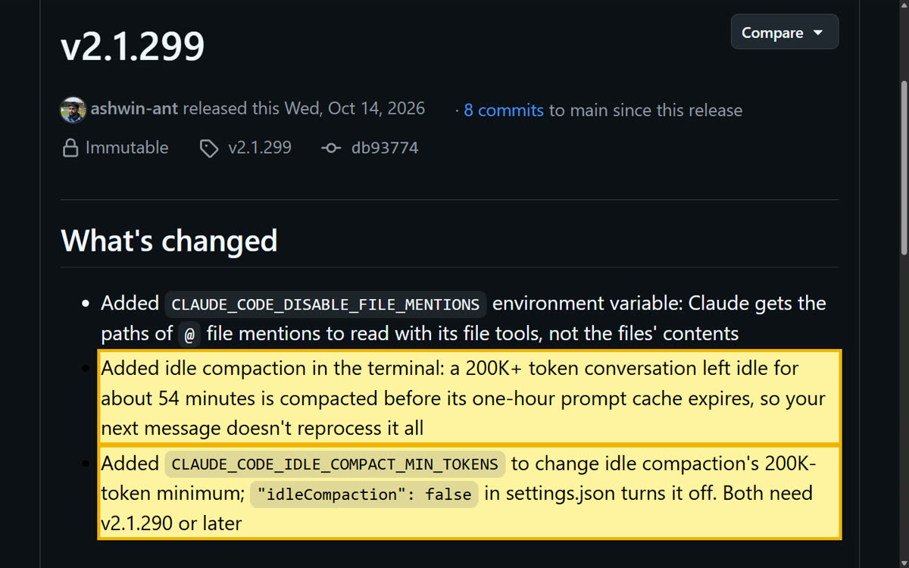

이 포스팅은 쿠팡 파트너스 및 토스쇼핑 쉐어링크 활동의 일환으로, 이에 따른 일정액의 수수료를 제공받습니다.
클로드 코드 유휴 압축 끄고 켜기: 자리 비우면 알아서 압축하는 기능, 직접 확인한 방법
명령어·설정·실패 해결표
| 구분 | 내용 | 해결 |
|---|---|---|
| 설정 | /config | |
| 명령어 | claude --version | |
| 명령어 | claude update | |
| 명령어 | winget upgrade Anthropic.ClaudeCode | |
| 실패 해결 | "idleCompaction": false를 넣었는데 꺼지지 않음 | 이 키는 v2.1.290 이상에서만 통한다. 더 옛 버전은 키를 무시하므로 autoCompactEnabled를 끄거나 claude update로 업데이트한다. |
한눈에 보기
- Claude Code는 Anthropic이 만든 코딩 도우미예요. 검은 명령어 창인 '터미널'에서 써요. [v2.1.299](https://github.com/anthropics/claude-code/releases/tag/v2.1.299)부터 유휴 압축(Idle compaction)이 들어왔어요. 20만 토큰이 넘는 대화를 약 54분 그대로 두면, 1시간짜리 프롬프트 캐시가 끝나기 전에 대화를 자동으로 압축해요. 토큰은 AI가 글을 세는 단위예요.
- [v2.1.302](https://github.com/anthropics/claude-code/releases/tag/v2.1.302)부터는
/config화면에서 이 기능을 끄거나 켤 수 있어요. 우리 PC(v2.1.303)에서는 아무 설정도 하지 않았는데 이미 켜짐(true) 상태였어요. - 스위치를 끄자 0.2초 안에 settings.json에
"idleCompaction": false가 저장됐어요. 다만 실제로 압축이 일어나는 장면은 재현하지 못했어요.
공식 릴리스 노트 원문은 이래요. "a 200K+ token conversation left idle for about 54 minutes is compacted before its one-hour prompt cache expires, so your next message doesn't reprocess it all." 쉽게 풀면, 미리 압축해 두니 돌아와서 보내는 다음 메시지가 긴 대화 전체를 처음부터 다시 처리하지 않아도 된다는 뜻이에요. 프롬프트 캐시는 그 대화를 잠시 저장해 두는 공간이에요.

시작 전에 확인할 것
- 요금·계정: Claude Pro, Max, Team, Enterprise 또는 Console(API) 계정이 있어야 해요. 무료 claude.ai 플랜에서는 쓸 수 없어요([공식 설치 문서](https://code.claude.com/docs/en/setup)). 유휴 압축은 따로 돈을 내는 기능이 아니에요. 압축할 때도 평소처럼 내 계정 사용량을 써요. 사용 한도를 늘려 주는 기능이 아니에요.
- 운영체제: Windows 10 1809 이상, macOS 13 이상, Ubuntu 20.04 이상, Debian 10 이상, Alpine 3.19 이상이 필요해요. RAM 4GB 이상과 인터넷 연결도 필요해요.
- 버전: 유휴 압축 기능은 2.1.299 이상,
/config에서 끄고 켜기는 2.1.302 이상에서 돼요. - 적용 범위: 터미널에서만 동작해요. 기준 토큰(기본 20만) 이상인 대화를 약 54분 놔뒀을 때 작동해요. 기준 토큰은 바꿀 수 있고, 아래 '기본 상태 알아 두기'의 조건도 모두 맞아야 해요.
- 주의: 압축되면 이전 대화가 짧아져서 세부 내용이 빠질 수 있어요.
설치 방법
1. Claude Code 설치하기 📄 공식 문서 기준
이미 설치돼 있으면 2번으로 넘어가세요. 내 컴퓨터에 맞는 명령을 터미널에 붙여 넣어요.
Windows PowerShell: irm https://claude.ai/install.ps1 | iex Windows CMD: curl -fsSL https://claude.ai/install.cmd -o install.cmd && install.cmd && del install.cmd macOS, Linux, WSL: curl -fsSL https://claude.ai/install.sh | bash
- 창 앞부분이
PS C:\로 시작하면 PowerShell이고,PS없이C:\로 시작하면 CMD예요. - 다운로드 중에는 진행 표시가 나오지 않아요. 멈춘 게 아니에요. 설치가 끝나면 새 터미널 창을 열어요.
2. 버전 확인하기 ✅ 직접 해 봄
claude --version
- 성공:
2.1.303 (Claude Code)처럼 버전이 나오면 돼요. 우리 PC에서는 1초 안에 나왔어요. - 막히면: 우리도 처음에 'claude' 명령을 찾을 수 없다는 오류가 났어요. 우리 PC의 Claude Code가 컴퓨터 전체에 설치된 게 아니라 프로젝트 폴더 안에 따로 설치돼 있었기 때문이에요. 그래서 명령어를 찾는 경로 목록인 PATH에 등록돼 있지 않았어요. 설치된 위치의 전체 경로로 실행하니 해결됐어요.
3. 버전이 낮으면 업데이트하기 📄 공식 문서 기준
claude update
- 이미 최신 버전이면
Claude Code is up to date (<version>)가 나와요. - WinGet으로 설치했다면
winget upgrade Anthropic.ClaudeCode, Homebrew로 설치했다면brew upgrade claude-code를 써요. 이 두 방식은 자동 업데이트가 되지 않아요.
사용 방법
1. 프로젝트 폴더에서 실행하기 ✅ 직접 해 봄
cd 내_프로젝트_폴더_경로 (실제 작업할 프로젝트 폴더 경로로 바꿔 넣어요) claude
- 우리 PC에서는 4.0초 만에 입력창이 나왔어요. 버전, 모델, 요금제(Claude Max)도 함께 표시됐어요.
- 처음 여는 폴더라면 이 폴더를 믿는지 묻는 화면이 나와요.
Yes, I trust this folder를 고르면 돼요.
2. 기본 상태 알아 두기 📄 공식 문서 기준 + ✅ 우리 PC 확인
[설정 문서](https://code.claude.com/docs/en/settings-reference.md#idlecompaction)에 따르면 유휴 압축은 처음부터 켜져 있어요. 아래 조건을 모두 만족할 때 동작해요.
- 터미널에서 대화하는 중이에요.
- 1시간짜리 프롬프트 캐시를 쓰고 있어요.
- Anthropic 서버에서 기능 설정을 받아올 수 있어요.
- 대화가 기준 토큰(기본 20만) 이상이에요.
- 마지막 요청 뒤 약 54분이 지났고, 그때 컴퓨터가 깨어 있어요.
압축되면 대화에 Compacted while idle, before the prompt cache expired라는 문구가 표시된다고 문서에 나와 있어요.
3. /config에서 끄고 켜기 ✅ 직접 해 봄
1. 입력창에 /config를 입력하고 Enter를 눌러요. 2.5초 안에 설정 화면이 열렸어요. Idle compaction true가 Auto-compact 바로 아래에 보였어요. 2. 설정 목록이 길어요. idle을 입력하면 1초 안에 Idle compaction 한 줄만 남아요. 3. ↓ 키로 그 줄을 고르고 Space(또는 Enter)를 눌러요. true는 켜짐, false는 꺼짐이에요. 4. 다 바꿨으면 Esc로 닫아요.

4. 저장됐는지 확인하기 ✅ 직접 해 봄
사용자 폴더의 %USERPROFILE%\.claude\settings.json을 열어 봐요. 끄면 "idleCompaction": false, 다시 켜면 true가 저장돼요. 우리 PC에서는 0.2초 안에 파일에 반영됐어요.

5. 기준 토큰 바꾸기(선택) 📄 공식 문서 기준
기본 기준은 20만 토큰이에요. 바꾸려면 환경변수 CLAUDE_CODE_IDLE_COMPACT_MIN_TOKENS를 써요. 공식 원문에는 기본값 말고 권장값이 따로 나와 있지 않아요. 이 환경변수와 settings.json 설정은 원문상 v2.1.290 이상에서 동작한다고 해요. 화면에서 바꾸려면 2.1.302 이상으로 맞추는 게 안전해요.

우리가 직접 해 본 결과
확인 수준: partial(일부 확인)
- 2026-10-20에 Windows PC에서 v2.1.303을 따로 마련한 연습용 폴더에서 실행했어요. 모델에게 질문은 보내지 않았어요.
- 설정 화면에서 기본값
true를 확인했어요. Space를 한 번 누르니false가 되면서 settings.json에도false가 저장됐어요. 한 번 더 누르니 다시true가 됐어요. - 끝난 뒤 settings.json을 미리 백업해 둔 원래 파일로 되돌렸어요. 원본과 바이트 단위까지 똑같은지도 확인했어요.
우리는 여기서 막혔어요
- 처음
claude --version을 쳤을 때 PATH 문제로 명령을 찾지 못했어요. - 터미널을 자동으로 조작하는 도구에서 Enter 키가 전달되지 않았어요. 그래서 다른 가상 터미널 방식으로 바꿔서 진행했어요.
- 실제 유휴 압축은 재현하지 못했어요. 20만 토큰이 넘는 대화를 만들고 54분을 기다려야 해서 이번 범위를 넘었어요. 그래서 '54분 뒤 압축된다'는 내용은 공식 CHANGELOG 기준이에요.
자주 막히는 곳
- 'claude'를 찾을 수 없다고 나와요: 설치 직후라면 새 터미널 창을 열어 보세요. 우리처럼 폴더 안에 따로 설치했다면 설치된 위치의 전체 경로로 실행하세요.
- /config에 Idle compaction 줄이 없어요: 버전이 2.1.302보다 낮은지 확인하고
claude update를 실행하세요. - /config가 열리지 않아요: VS Code 채팅 패널이나 데스크톱 앱에서는 열리지 않아요. 터미널에서 실행하세요.
- 압축 뒤에 앞의 맥락이 흐려졌어요: 압축하면서 세부 내용이 빠질 수 있어요. 필요하면 위 방법으로 꺼 두세요.
🧰 오늘의 실험실 생존 세트 — 밤새 실험 돌릴 때 쟁여 두는 것들


정리
긴 작업을 하다 자리를 자주 비운다면 유휴 압축은 켜진 상태로 둬도 괜찮아 보여요. 세부 맥락이 꼭 남아 있어야 한다면 /config에서 꺼 두면 돼요. 이번 확인은 한 PC에서 한 번 해 본 결과예요. 실제 압축이 일어나는 장면은 확인하지 못했어요. 원문은 [공식 CHANGELOG](https://github.com/anthropics/claude-code/blob/main/CHANGELOG.md)에서 볼 수 있고, 확인 과정은 [쇼츠](https://youtube.com/shorts/zjzf4zTT1hQ)로도 올렸어요.
이 글은 실제 확인 기록을 바탕으로 AI 도구와 함께 정리했어요.
혹시 글에서 틀린 부분이나 고쳐야 할 부분이 보이면 유튜브·스레드 댓글로 알려 주시면 정말 감사하겠습니다. 바로 확인해서 고칠게요!
🛒 다시 보기: 오늘의 생존 세트
🎙️ AI 음성이 궁금하다면
우리 채널 내레이션은 타입캐스트를 쓰지만, 영어·다국어 AI 음성을 실험해 보고 싶다면 ElevenLabs도 많이 쓰여요.
ElevenLabs 둘러보기 (제휴)🎬 쇼츠로 다시 보기 · 🧵 함께 이야기하기
🧵 스레드 @alligatorxor에서 오늘 실험 이야기 나누기 · ▶ 유튜브 새AI실험노트 다른 쇼츠 보기 · 📒 실험노트 홈